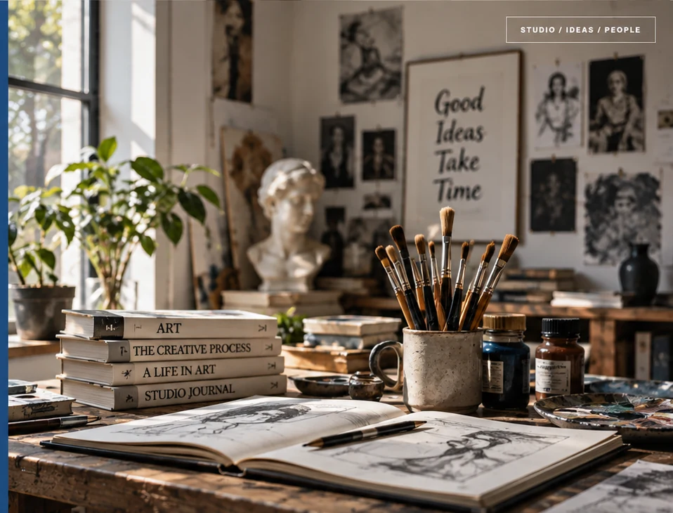
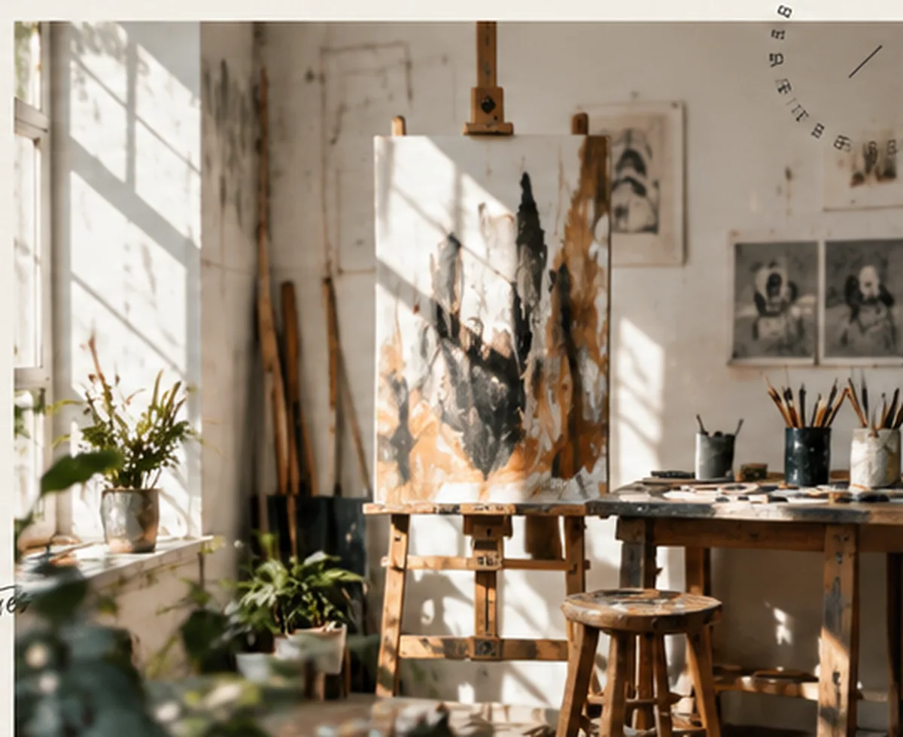
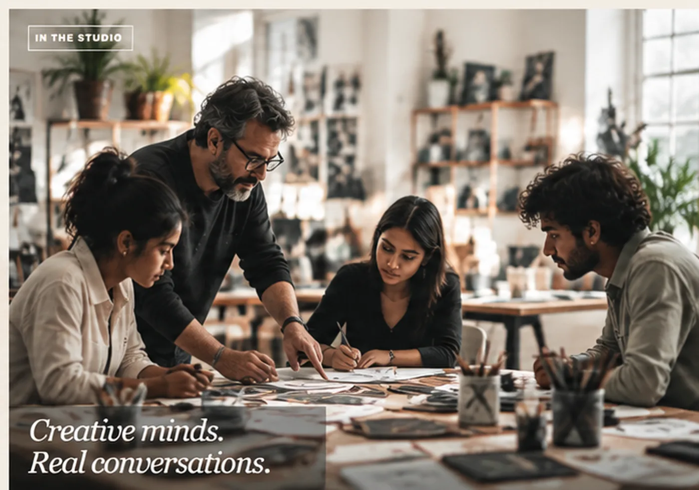
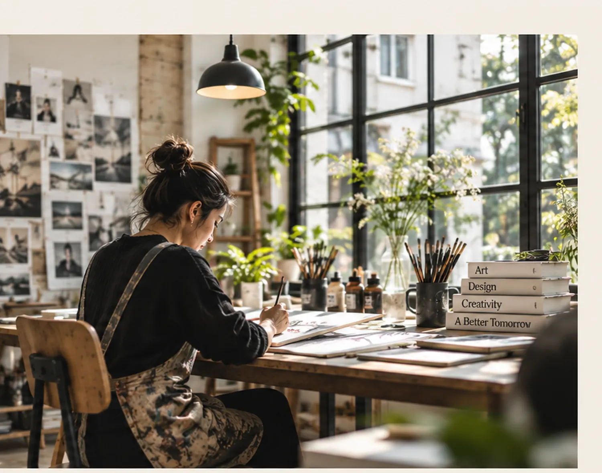

01
START WITH A QUESTION
Research
Gather references, investigate context and identify what the work needs to explore.
A studio-led environment for making, questioning and developing creative work across disciplines.
From first experiments to finished presentations, our services give creative practice the structure, attention and conversation it needs to move forward.

02 / STUDIOFrom traditional arts to emerging media, our disciplines give you the space, guidance and community to grow your practice.
Explore all disciplines
STUDIO / 03Drawing, painting, sculpture and material-led studio practice.
Visual communication, systems and ideas made clear.
Form, textile, image and identity developed through making.
Photography, moving image and contemporary digital practice.
Build core skills, test materials and discover your direction.
Dedicated space, tools and a community to make and grow.
Ideas become stronger when they move between disciplines, people and real situations.
Creative work grows through action. Our process gives each project room to research, test, receive feedback and become more resolved.
Gather references, investigate context and identify what the work needs to explore.
Work with materials, tools and formats until an idea starts to reveal its direction.
Use conversation and constructive feedback to question choices and strengthen the work.
Shape the final outcome for an exhibition, portfolio, audience or the next stage of practice.

STUDIO / 05Artists, designers and makers bring different ways of seeing into the studio — making every project a chance to learn from a real practice.
Take the next step with a creative community built around making, testing, sharing and showing the work.

01 / STUDIO LIFE